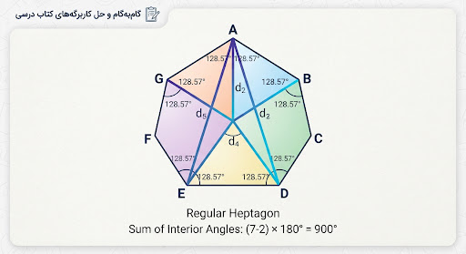

۱
کتاب درسی
حل تمرین ۱ — صفحه ۳۲
مبحث: محاسبه مجموع زاویههای داخلی n-ضلعی
help_center
متن سوال کتاب درسی:
«مجموع زاویههای داخلی یک ۷ ضلعی محدب را به دست آورید. سپس اندازه هر یک از زاویههای داخلی آن را در حالتی که ۷ ضلعی منتظم باشد، تا یک رقم اعشار محاسبه کنید.»

شکل راهنما: افراز ۷-ضلعی به ۵ مثلث با رسم قطرها
صفحه ۳۲ کتاب
check_circle
پاسخ تشریحی استاندارد و گامبهگام:
الف
محاسبه مجموع زاویههای داخلی:
با توجه به فرمول کتاب درسی، از یک رأس ۷ ضلعی میتوان به ۴ رأس دیگر قطر رسم کرد که شکل را به (n - ۲) یعنی ۵ مثلث مجزا تبدیل میکند:
S = (n - 2) × 180°
S = (7 - 2) × 180° = 5 × 180° = 900°
بنابراین مجموع زوایای داخلی برابر با ۹۰۰ درجه است.
ب
محاسبه هر زاویه در ۷-ضلعی منتظم:
چون ۷ ضلعی منتظم است، تمام ۷ زاویه داخلی با هم برابرند. مجموع زوایا را بر تعداد اضلاع تقسیم میکنیم:
A = 900° ÷ 7 ≈ 128.57° ≈ 128.6°
info
گرد کردن با تقریب کمتر از ۰.۱ به درخواست طراح کتاب: ۱۲۸.۶ درجه.